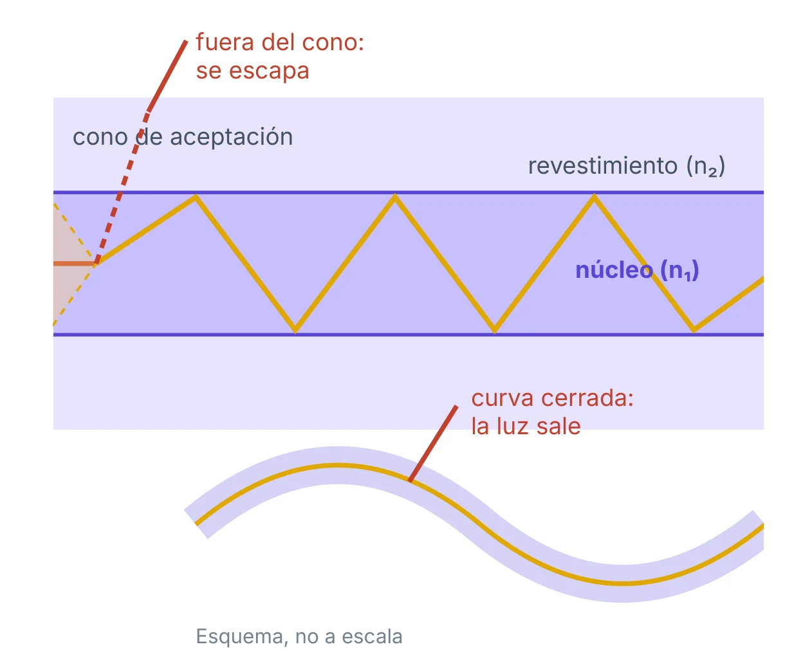
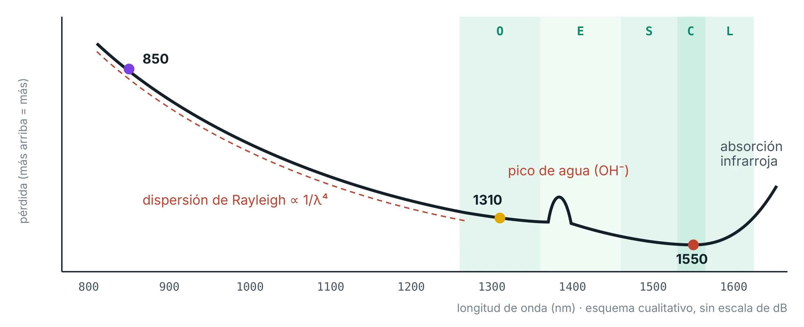
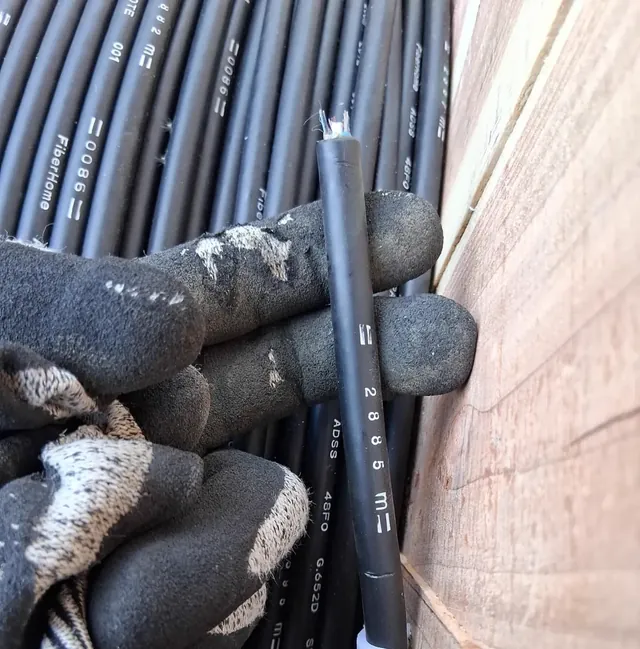
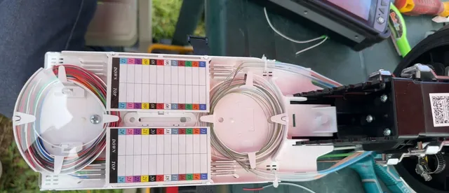
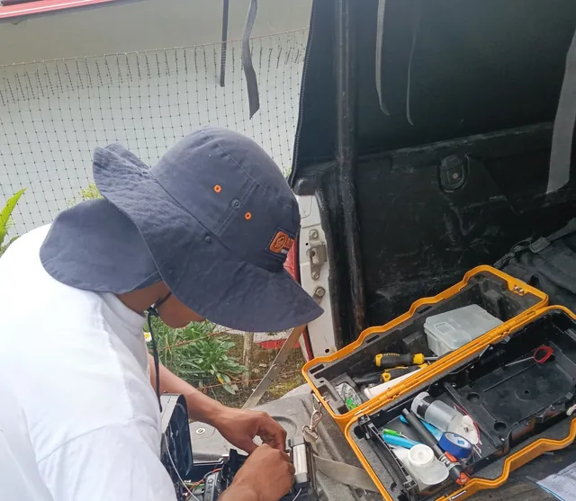

Parte 1
Fundamentos de transmisión óptica
Cubre los temas 1 a 6 de esta página. Ver en YouTube (se abre en otra pestaña)
Cómo viaja la luz por la fibra, en qué se diferencian la monomodo y la multimodo, por qué se pierde potencia y cómo se mide, y cómo se identifica cada fibra con el código de colores antes de empalmar.
Material de apoyo formativo. Los valores de este módulo son de referencia. En obra se toman de la ficha técnica del cable instalado, de los planos de la red, del diseño del enlace y del procedimiento del operador, y no sustituyen el criterio del ingeniero responsable.
Al terminar este módulo, el técnico estará en capacidad de:
La fibra no se rige por una ley colombiana específica: la definen recomendaciones y normas técnicas internacionales que cumplen los fabricantes y que aparecen impresas en el cable y en su ficha.
La G.652 describe la fibra monomodo estándar, con dispersión cero cerca de 1310 nm; para la subcategoría G.652.D fija un máximo de atenuación en cable de 0,4 dB/km de 1310 a 1625 nm y de 0,3 dB/km en 1550 nm. La TIA-598 define los colores de fibras y tubos; no debe confundirse con el NEC (NFPA 70), que trata la seguridad y el listado de los cables. Las referencias de la FOA explican cómo calcular y medir la pérdida.
Serie Fundamentos de fibra óptica, producida por NPE, en dos partes con narración y subtítulos. La primera explica cómo viaja la luz y en qué se diferencian las fibras; la segunda, las ventanas de operación, la atenuación, la medición y el código de colores. Cada capítulo lleva al tema correspondiente del video.
Cubre los temas 1 a 6 de esta página. Ver en YouTube (se abre en otra pestaña)
Cubre los temas 7 a 12 de esta página. Ver en YouTube (se abre en otra pestaña)
Resumen de cada tema en el orden de los dos videos. Las cifras y los cálculos están en las claves técnicas.
Antes de abrir una caja o un cierre por una lectura extraña, se verifica en este orden: la configuración del equipo (longitud de onda y referencia), la limpieza y el estado de los conectores, la identificación de la fibra y la comparación entre 1310 y 1550 nm. La mayoría de las lecturas malas se resuelven en los dos primeros pasos.
Cálculos y criterios que el video no desarrolla: ángulo crítico, lectura del cable, unidades, longitudes de onda, presupuesto óptico y ubicación de una fibra. El tema completo está en las dos guías de la sección de descargas.
El índice de refracción indica cuánto más lenta va la luz en un material que en el vacío (n = c ÷ v). La luz queda atrapada si choca con el borde por encima del ángulo crítico θc = arcsen (n₂ ÷ n₁), medido desde la perpendicular al borde. Para eso debe entrar dentro de un cono, cuya abertura mide la apertura numérica AN = √(n₁² − n₂²) = sen θa.

θc = arcsen (1,463 ÷ 1,468) = arcsen 0,99659 ≈ 85,3°: respecto al eje, el rayo puede inclinarse como máximo unos 4,7°. AN = √(2,15502 − 2,14037) ≈ 0,121 y θa = arcsen 0,121 ≈ 7,0°: la luz debe entrar dentro de unos 7° a cada lado del eje.
Índices supuestos para practicar.
En campo: las pérdidas por curvatura, por desalineación en el empalme y por suciedad en el conector tienen la misma causa: la luz sale del cono o deja de cumplir la reflexión interna total. Por eso el cable se maneja con radios amplios y las caras de la fibra se cortan, limpian y alinean con cuidado.
| Se lee | Significa | Por qué importa |
|---|---|---|
| ADSS | Cable autosoportado totalmente dieléctrico | Sin metal: define herrajes y forma de instalación. |
| 48FO | 48 fibras ópticas | Cuántas fibras hay que identificar y organizar en la bandeja. |
| G.652D | Fibra monomodo, subcategoría D de la UIT-T G.652 | Define el programa de la fusionadora y las longitudes de onda de medición. |
| 2885 m | Marca de longitud del cable | Restando dos marcas se sabe cuánto cable se tendió o queda en reserva. |
Marcación del cable de una troncal de NPE. Como referencia, la ficha de una fibra G.652.D comercial (Prysmian ESMF) declara revestimiento de 125,0 ± 1,0 µm, recubrimiento de 245 ± 10 µm y atenuación en cable de ≤ 0,36 dB/km a 1310 nm y ≤ 0,22 dB/km a 1550 nm.
Al inicio del tramo se lee 2885 m y al final 2412 m: 2885 − 2412 = 473 m de cable tendido.
Marca final supuesta para practicar.
En campo: el revestimiento (vidrio de 125 µm) nunca se retira; el recubrimiento (plástico de color, de unos 245 a 250 µm) se retira con la peladora. Si un cable no tiene la marcación legible, no se empalma hasta identificarlo con los planos, el inventario de la red o el supervisor.
El dBm es potencia absoluta (0 dBm = 1 mW; P en mW = 10^(dBm ÷ 10)); el dB es una pérdida o diferencia entre dos potencias; el dB/km es el coeficiente de atenuación de la fibra. Cada 3 dB de pérdida llega la mitad de la luz y cada 10 dB, la décima parte.
| Pérdida | Llega | Equivale a |
|---|---|---|
| 0,1 dB | 97,7 % | El orden de un empalme |
| 0,5 dB | 89,1 % | El orden de una conexión deficiente |
| 1 dB | 79,4 % | Se pierde una quinta parte |
| 3 dB | 50,1 % | Llega la mitad |
| 10 dB | 10 % | Llega la décima parte |
| 20 dB | 1 % | Llega la centésima parte |
Operaciones válidas: dBm − dB da la potencia después de una pérdida (dBm); dBm − dBm da la pérdida entre dos puntos (dB); dB + dB suma pérdidas en serie. Sumar dBm + dBm no tiene significado físico.
La pantalla marca −18,23 dBm y 15,03 µW: 10^(−18,23 ÷ 10) = 10^(−1,823) = 0,01503 mW = 15,03 µW. Son la misma potencia expresada en dos unidades.
En campo: un reporte que dice «pérdida −18,23 dBm» está mal escrito: es la potencia recibida («potencia recibida −18,23 dBm en 1490 nm»). Una pérdida se reporta en dB y solo si se conoce la referencia o la potencia de salida.
La dispersión de Rayleigh, la principal causa de atenuación, es proporcional a 1/λ⁴: de 1310 a 1550 nm baja a la mitad ((1310 ÷ 1550)⁴ ≈ 0,51) y de 850 a 1550 nm, a cerca de la undécima parte (≈ 0,09). Cerca de 1383 nm está el pico de absorción del agua y por encima de 1600 nm crece la absorción del vidrio; el mínimo queda alrededor de 1550 nm.

| Longitud de onda | Fibra | Uso |
|---|---|---|
| 850 nm | Multimodo | Redes locales; 10 Gb y más con VCSEL |
| 1310 nm | Monomodo | Enlaces monomodo; subida en FTTH PON |
| 1490 nm | Monomodo | Bajada en FTTH PON |
| 1550 nm | Monomodo | Larga distancia; video en PON con video |
Con mayor longitud de onda la luz va menos confinada: 1550 nm tiene menos atenuación propia pero es más sensible a la curvatura que 1310 nm.
En campo: el power meter se configura en la longitud de onda del servicio, porque se calibra para cada una. Los tramos se miden en 1310 y 1550 nm y se comparan: si 1550 nm pierde claramente más que 1310 nm, lo más probable es una curva, un pellizco o una microcurvatura.
La pérdida esperada de un enlace es la suma de la fibra, las conexiones y los empalmes. Para un presupuesto preliminar se usan valores típicos de la FOA: fibra monomodo de 0,4 dB/km a 1310 nm y 0,3 dB/km a 1550 nm (iguales al máximo de cable de la G.652.D) y 0,3 dB por par de conectores. El empalme por fusión suele quedar por debajo de 0,05 dB; aquí se toman 0,1 dB como valor de diseño conservador.
| Elemento | A 1310 nm | A 1550 nm |
|---|---|---|
| Fibra · 12 km | 12 × 0,4 = 4,8 dB | 12 × 0,3 = 3,6 dB |
| 2 conexiones | 2 × 0,3 = 0,6 dB | 0,6 dB |
| 6 empalmes | 6 × 0,1 = 0,6 dB | 0,6 dB |
| Pérdida esperada | 6,0 dB | 4,8 dB |
Con un transmisor de 0 dBm y un receptor que necesita −24 dBm hay 24 dB disponibles: margen a 1310 nm = 24 − 6,0 = 18,0 dB (la FOA recomienda en general más de 3 dB). Si se miden 6,3 dB, el tramo está dentro de lo esperado más la incertidumbre (± 0,2 a 0,5 dB). Si se miden 9 dB, sobran 3 dB: hay un evento que el diseño no tenía.
Tramo, potencias y medición supuestos para practicar. Los valores reales salen de la ficha de cada equipo y del diseño.
En campo: cada longitud de onda usa su propio coeficiente. Con el método de 1 cable, después de fijar la referencia el cable se desconecta solo del medidor: si se retira de la fuente, la referencia deja de valer. El método usado se registra con la medición.
Secuencia de 12 colores de la TIA-598 para fibras y tubos. En un cable de 48 hilos con 4 tubos de 12, el tubo también sigue la secuencia: tubo 1 azul, tubo 2 naranja, tubo 3 verde, tubo 4 café.
| Posición | Color | Fibras de ese color en un cable de 48 |
|---|---|---|
| 1 | Azul | 1, 13, 25, 37 |
| 2 | Naranja | 2, 14, 26, 38 |
| 3 | Verde | 3, 15, 27, 39 |
| 4 | Café | 4, 16, 28, 40 |
| 5 | Gris | 5, 17, 29, 41 |
| 6 | Blanco | 6, 18, 30, 42 |
| 7 | Rojo | 7, 19, 31, 43 |
| 8 | Negro | 8, 20, 32, 44 |
| 9 | Amarillo | 9, 21, 33, 45 |
| 10 | Violeta | 10, 22, 34, 46 |
| 11 | Rosa | 11, 23, 35, 47 |
| 12 | Aqua | 12, 24, 36, 48 |
Tubo = n ÷ 12, redondeado hacia arriba · posición = n − 12 × (tubo − 1). Cuando hay más de 12 tubos o de 12 fibras por tubo, las posiciones 13 a 24 repiten los colores con una raya negra, y el negro lleva raya amarilla.
45 ÷ 12 = 3,75, así que va en el tubo 4 (café); 45 − 36 = 9, posición 9 (amarillo).
En campo: el cálculo vale solo si la ficha técnica confirma la construcción (número de tubos y fibras por tubo); algunos fabricantes marcan los grupos de otra forma. Antes de cortar se verifica la continuidad del hilo: una fibra mal identificada corta el servicio de otro cliente.
Riesgos para la persona y para la red al manipular, empalmar o medir fibra.
| Peligro | Severidad | Control |
|---|---|---|
| Luz infrarroja invisible | Alta | La luz de estas redes no se ve: que una fibra parezca apagada no significa que no tenga potencia. Nunca mirar el extremo de una fibra ni un conector; verificar primero con el power meter. |
| Residuos de fibra | Alta | Gafas de seguridad con protección lateral y recipiente marcado para los residuos, que pueden clavarse en la piel. |
| Corte del servicio de otro cliente | Alta | Ubicar tubo y fibra contra el plano y el registro de la caja, y verificar la continuidad antes de cortar o empalmar. |
| Mezcla de fibras de distinto tipo | Media | Leer la marcación de ambos cables y sus fichas antes de empalmar. Si un cable no se puede identificar, escalar al supervisor. |
| Curvas forzadas y amarres que presionan | Media | Respetar el radio mínimo del fabricante en bandejas y entradas de caja; amarres sin presionar los tubos. |
Lo que muestra el equipo, su causa probable y qué hacer. Muchas lecturas extrañas no son fallas de la red sino del procedimiento de medición.
| Señal | Gravedad | Qué hacer |
|---|---|---|
| Lectura muy baja o sin señalLongitud de onda mal configurada, conector sucio, fibra equivocada, curva en el cordón o corte. | Media | Revisar la configuración; luego limpiar e inspeccionar el conector, confirmar tubo y fibra, y por último la continuidad. |
| Pérdida en 1550 nm claramente mayor que en 1310 nmCurva cerrada, pellizco o microcurvatura. | Alta | Revisar bandejas, entradas de caja, amarres y radios de guarda. |
| Pérdida alta y parecida en ambas longitudes de ondaConector sucio o dañado, o empalme defectuoso. | Alta | Inspeccionar y limpiar los conectores; revisar los empalmes con OTDR. |
| Pérdida muy alta entre dos tramosMezcla de fibra multimodo y monomodo. | Alta | Verificar la marcación de ambos cables y sus fichas técnicas. |
| La lectura cambia al mover el cable o la bandejaFibra presionada o conector flojo. | Media | Reacomodar la fibra sin forzarla y asegurar el conector. |
| Pérdida medida menor que ceroReferencia mal tomada o cable de referencia retirado de la fuente. | Media | Repetir la referencia con conectores limpios. |
| Distancias del OTDR que no coincidenÍndice de grupo mal configurado o reservas de cable no consideradas. | Media | Configurar el índice de la ficha y sumar las reservas del diseño. |
| Resultados distintos en cada intentoConectores sucios o fuente sin estabilizar. | Baja | Limpiar, inspeccionar y esperar a que la fuente se estabilice. |
Fotos de obras de NPE en el Putumayo relacionadas con los temas del módulo. Haga clic en una foto para verla en tamaño completo.





Una pregunta por cada clave técnica; cuatro son casos de campo. Respóndala y luego ábrala para comprobar.
Mayor. En una curva cerrada cambia el ángulo con que la luz llega al borde, y parte de ella queda por debajo del ángulo crítico y sale.
No sin identificar el cable existente. Mezclar monomodo y multimodo produce pérdidas grandes y el programa de la fusionadora depende del tipo de fibra. Se consultan los planos o el inventario de la red, o se escala al supervisor.
No. Un valor en dBm es una potencia recibida: «potencia recibida −18,23 dBm en 1490 nm» (15,03 µW). La pérdida se expresa en dB y requiere una referencia o la potencia de salida.
Todavía no se puede concluir. La bajada en FTTH viaja en 1490 nm: se configura el equipo en esa longitud de onda y se repite la medición. Si sigue baja, se limpia e inspecciona el conector y se revisa el recorrido del cordón antes de abrir la caja.
No de inmediato. Se esperaban 3,2 + 1,2 = 4,4 dB a 1310 nm y 2,4 + 1,2 = 3,6 dB a 1550 nm. A 1310 nm el resultado es aceptable; a 1550 nm sobran 2 dB y la pérdida supera la de 1310 nm, señal de una curva o un esfuerzo sobre la fibra. Se revisan bandejas y entradas de caja antes de pensar en cambiar el cable.
Tubo 3 (verde), posición 6 (blanco): 30 ÷ 12 = 2,5, se redondea a 3; 30 − 24 = 6. Antes de cortar se verifica la continuidad.